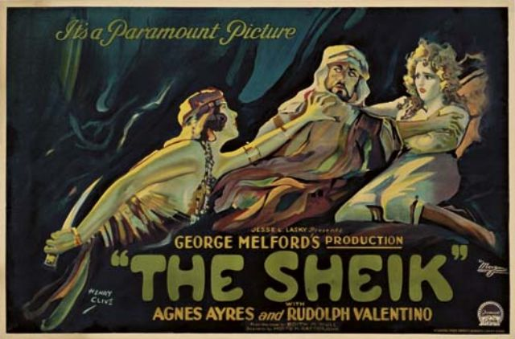
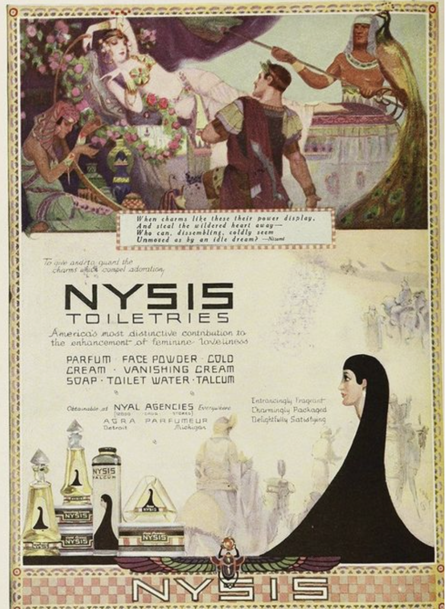
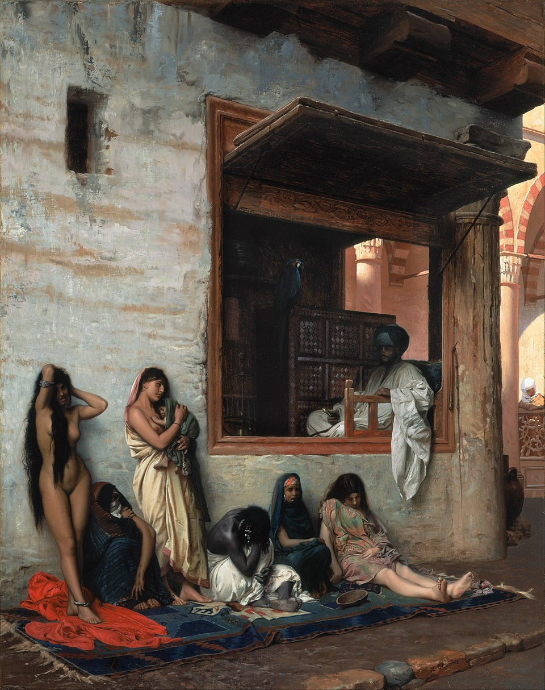
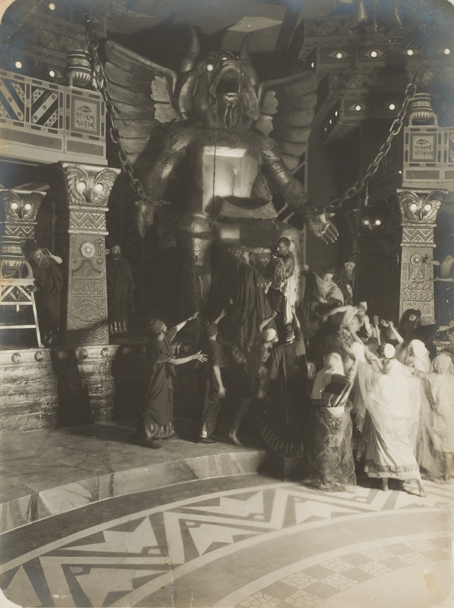
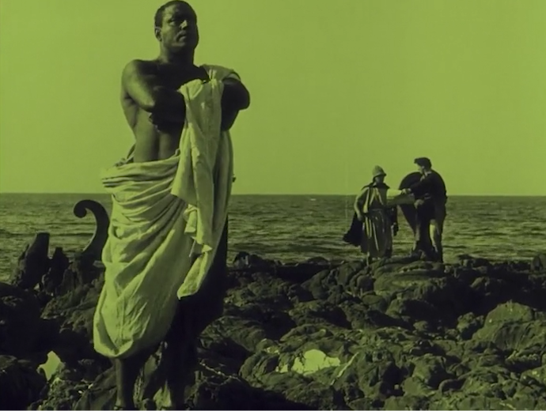

Cos’è davvero l’Oriente? Per Edward Said, critico letterario e teorico postcoloniale, non è una realtà geografica, ma un’invenzione dell’Occidente. Il suo celebre saggio Orientalismo (1978) ci mostra come arte, letteratura e accademia abbiano costruito nei secoli un’immagine dell’Oriente come luogo esotico, misterioso, arretrato – il perfetto “altro” da contrapporre a un’Europa razionale, moderna e civile. Questa visione ha avuto conseguenze politiche enormi: giustificava il colonialismo e l’espansione imperiale, presentando il dominio occidentale come una missione di civiltà. L’Oriente, quindi, non veniva raccontato per ciò che era, ma per ciò che serviva a rafforzare l’identità e il potere dell’Occidente.



Il fascino dell’esotico nel cinema muto italiano
Nel primo Novecento, l’Italia era impegnata a costruire un’identità nazionale forte e a consolidare il proprio impero coloniale. Il cinema muto, con la sua capacità di stupire e coinvolgere le masse, divenne uno strumento potente per raccontare il mito della grandezza italiana.
I film ambientati in luoghi “esotici” o nell’antichità – come Cabiria (1914) – mescolavano avventura, spettacolo e propaganda. L’Oriente vi appariva come un mondo affascinante ma pericoloso, dominato da superstizioni e barbarie, in contrasto con la civiltà romana (e, per estensione, con quella italiana). Ma dietro queste immagini spettacolari si nascondeva una retorica sottile, che trasformava il dominio coloniale in narrazione epica e giustificata.

Cabiria: tra esotismo, spettacolo e ambiguità
Cabiria è uno dei grandi capolavori del cinema muto italiano: ambientato in un’Africa antica e misteriosa, racconta un’epica di salvataggi, guerre e rituali oscuri. L’immaginario orientalista è forte: la scena del sacrificio al dio Moloch, le architetture imponenti, i costumi esotici parlano di un mondo altro, violento e decadente, che attende la salvezza portata dagli eroi romani.
Eppure, il film presenta anche sfumature interessanti. Il personaggio di Maciste, ad esempio, è un eroe potente ma fuori dagli schemi: non è romano, né chiaramente identificabile con l’Occidente civilizzato. È uno straniero, una figura “altra” che salva la protagonista e diventa un simbolo di forza morale. Questa ambiguità rompe, almeno in parte, lo schema rigido Oriente/Occidente, introducendo una dimensione più complessa nel cuore del film.
